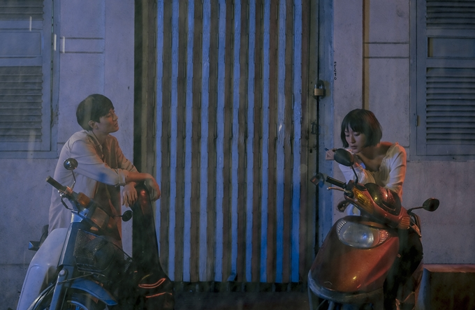
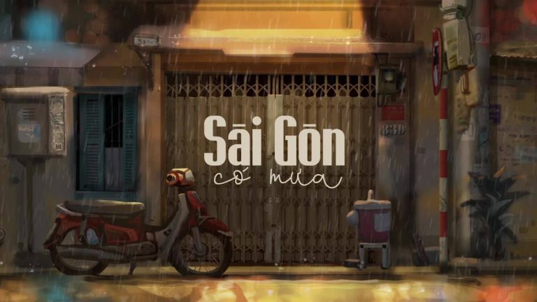
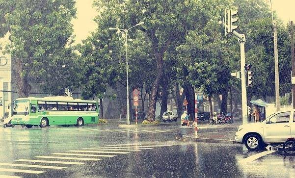
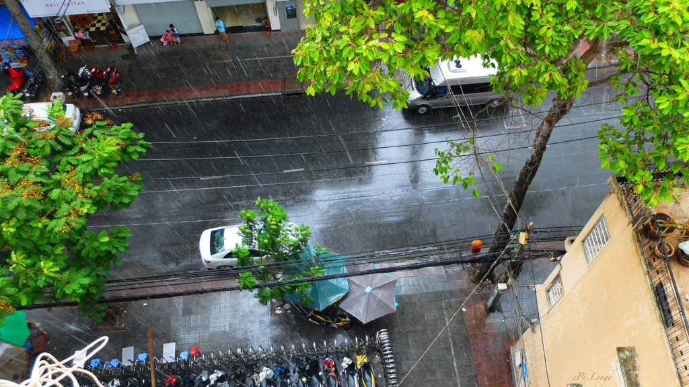
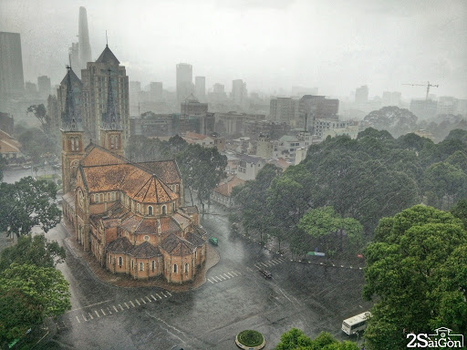
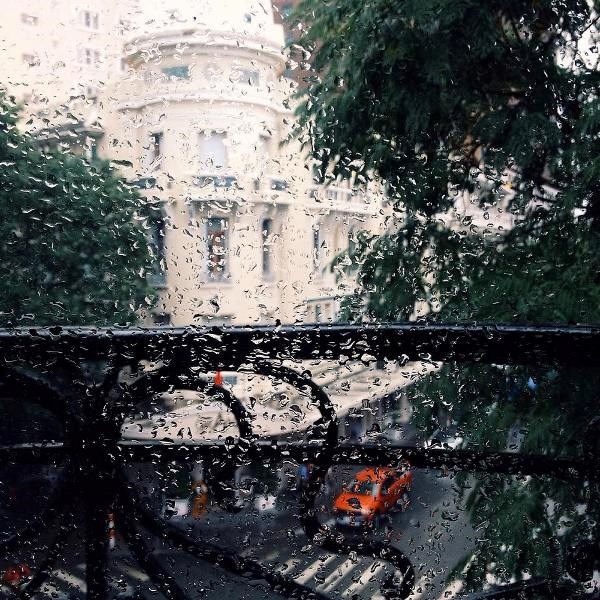
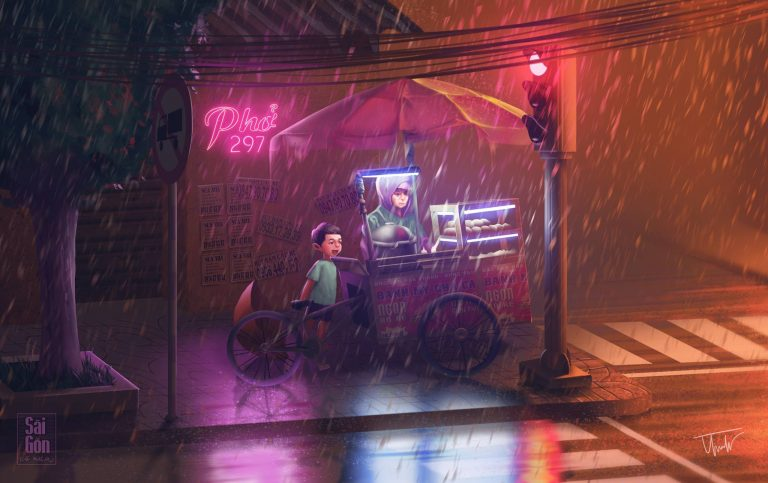
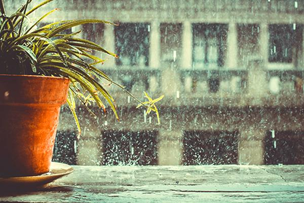
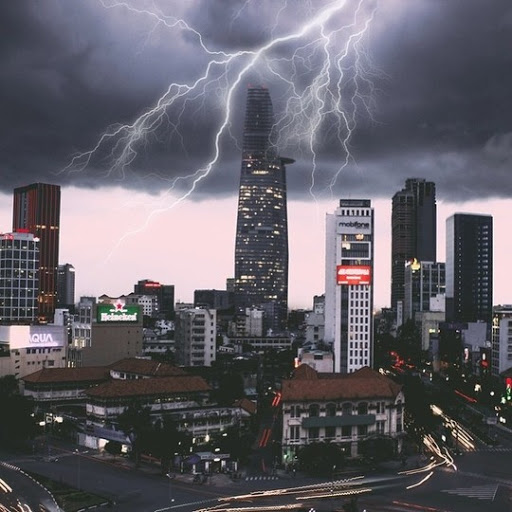
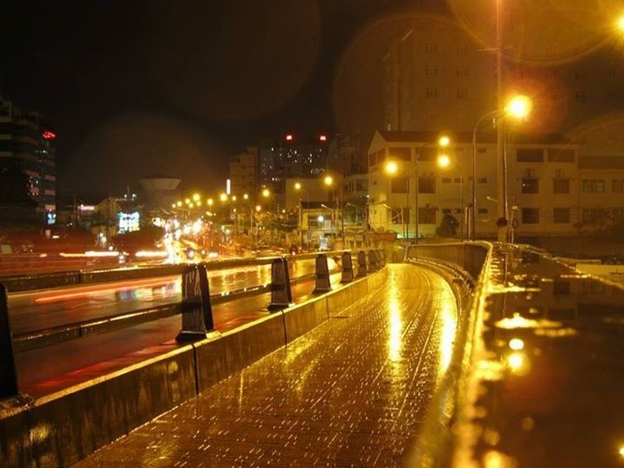

Nội dung chính
Người ta nói tính tình cô gái mới lớn giống như thời tiết Sài Gòn, sớm nắng chiều mưa thay đổi thất thường đến nổi người ta không kịp chuẩn bị. Mà nhắc đến mưa Sài Gòn lại là cả một câu chuyện dài thú vị. Đối với những người con xa quê lên Sài Gòn làm ăn, học hành thì những cơn mưa Sài Gòn lại ẩn chứa biết bao nhiêu nỗi niềm cảm xúc… và đó là cả một cuộc hành trình của một thời thanh xuân tươi đẹp.

1 cảnh quay đẹp trong phim Sài Gòn trong cơn mưa
Mùa mưa Sài Gòn tháng mấy?
Chợt một ngày đi dưới cái nắng nóng của Sài Gòn, với bao nhiêu là khói bụi, kẹt xe, cùng tiếng kèn inh ỏi, bỗng mây đen kéo tới, trời gầm chuyển, một cơn mưa đổ xuống tưới mát tất cả, xua tan đi cái nóng bứt thường ngày, mới khiến nhiều người vỡ lẽ ra rằng mùa mưa đã đến rồi! Không ít người tự ngẫm nghĩ lại mùa mưa Sài Gòn tháng mấy sao đến nhanh thế!

Mùa mưa Sài Gòn và những nỗi niềm – Nguồn ảnh: Fanpage Sài Gòn Có Mưa
Sài Gòn hai mùa mưa nắng đặc trưng, chẳng giống miền bắc bốn mùa xuân hạ thu đông với vẻ đẹp riêng, thời tiết Sài Gòn làm con người ta luyến tiếc.
Có câu nói rất thú vị rằng, đi qua những ngày nắng mới luyến tiếc những ngày mưa. Nắng nóng cháy da lại khiến con người ta “thèm” lắm một cơn mưa ngang qua để làm dịu đi bầu không khí ngột ngạt này.
Và rồi, khi mùa mưa đến chưa kịp vui mừng bao lâu thì chỉ có một suy nghĩ trong đầu mong sao cho mùa mưa nhanh qua để thoát khỏi cảnh vừa ướt vừa lạnh, cùng tâm trạng phập phồng lo sợ vì những tuyến đường ngập úng, trong lòng thầm cầu nguyện mau về đến nhà cho xe đừng tắt máy giữa đường.

Sài Gòn bước vào mùa những cơn mưa nặng hạt – Nguồn ảnh: Internet
Sài Gòn có khí hậu nhiệt đới gió mùa đặc trưng, nằm ở phía nam với hai mùa rõ rệt. Mùa khô kéo dài từ tháng 12 đến tháng 4 với kiểu thời tiết nắng nóng nhưng không quá gắt, se lạnh nhẹ vào cuối năm. Mùa mưa kéo dài từ tháng 5 cho đến tháng 11, có những năm sẽ trễ hơn đến tận cuối tháng 11, nhất là khi ảnh hưởng bởi những đợt áp thấp.
Mưa Sài Gòn khiến con người ta khá đau đầu bởi rất khó đoán trước, có khi trời mưa Sài Gòn kéo dài dai dẳng cả tuần liền không ngớt, cảm tưởng như đang hứng chịu sự “phẫn nộ” của thiên nhiên, nhưng lại có lúc chỉ là thoáng qua, Sài Gòn mưa rồi chợt nắng. Cơn mưa rào ấy vừa đủ tưới mát mọi thứ khiến người ta thư thả lạ thường bởi khung cảnh tràn đầy sức sống quanh mình.
Vào mùa mưa, đừng quên chuẩn bị cho mình sẵn một chiếc ô xinh xắn hay chiếc áo mưa để sẵn trong cốt xe vì mưa Sài Gòn chẳng thể nào đoán được là những cơn mưa đến nhanh đi nhanh như cô nàng đỏng đảnh giận nhanh quên nhanh, hay những lúc trời nắng bỗng đổ mưa rào như tính tình thất thường vui được một lát lại giận dỗi chẳng báo trước.

Mưa Sài Gòn đến rồi đi bất chợt khiến người ta không kịp phòng bị – Nguồn ảnh: Internet
Mưa Sài Gòn và những nỗi niềm trong ta
Nhắc đến Sài Gòn hoa lệ, không chỉ nhắc đến những tòa nhà cao chọc trời, ánh đèn màu lấp lánh mà còn có cả “đặc sản” mùa những cơn mưa bắt đầu từ tháng 7 kéo dài đến tận tháng 11, đôi khi lại ảnh hưởng của những ngày áp thấp nhiệt đời mà cơn mưa sẽ nặng hạt hơn kéo dài triền miên không ngừng cùng những ngày nước dâng cao mỗi giờ tan tầm khiến không ít người đau đầu.

Hình ảnh mưa lớn ở Sài Gòn không ít người đã từng trải qua – Nguồn ảnh: Internet
Những ai đã đến Sài Gòn mùa mưa, nhất là những người đang sống và làm việc tại Sài Gòn chắc hẳn không ít lần có những kỉ niệm sâu sắc dưới cơn mưa, cùng câu nói quen thuộc Sài Gòn mưa và nỗi nhớ.
Đó là khi đang đi giữa đường, nhìn trời quang mây tạnh là thế, chợt có một cơn mưa lớn kéo đến khiến người ta chẳng kịp phòng bị, diện mạo đẹp đẽ cũng bị ngâm ướt dưới cơn mưa.
Tiếp đến, là cảnh người xe vội vã tìm chỗ trú ẩn, có người lại tấp nhanh xe vào lệ với động tác quen thuộc chỉ mất vài phút mặc áo mưa rồi lại tiếp tục cuộc hành trình dưới màn mưa Sài Gòn.
Lại có những lúc nhìn trời tối đen, mưa lác đác vài hạt, thôi thì chuẩn bị trước cho chắc, áo mưa sẵn sàng, lòng yên tâm là thế, vậy mà trời tan mây từ từ cuối cùng chẳng có cơn mưa nào xuất hiện cả.
Lúc đó, chỉ có một cảm giác vừa tức vừa buồn cười vì cả một đoạn đường dài chỉ có một mình mình cùng vài nữa mặc áo mưa đi dưới trời nắng chẳng giống ai cả. Nói tính cách người con gái thất thường như thời tiết, ấy vậy mà mà thời tiết mùa mưa Sài Gòn cũng thất thường chẳng kém.

Mưa Sài Gòn cùng những câu chuyện khó quên – Nguồn ảnh: Internet
Thêm một tình huống nữa có lẽ đã có người cũng từng trải qua. Đó là khi cơn mưa phùn nhẹ nhẹ, khiến chúng ta có tâm lý rằng “thôi kệ mưa nhỏ sẽ không ướt bao nhiêu.” Vậy mà cơn mưa kéo dài dai dẳng, “nhỏ mà có võ”, đến khi về đến nhà hay nơi làm việc nhìn lại bản thân đã ướt tự bao giờ, vừa lạnh vừa run.
“Người buồn cảnh có vui đâu bao giờ”. Có người chán ghét những cơn mưa, có người lại thích yên tĩnh ngắm nhìn cơn mưa Sài Gòn nhẹ rơi trong khung cảnh hư ảo đầy lãng mạn. Ngồi trên chuyến xe bus đông người, đeo tai nghe mở bài nhạc ưa thích, nhìn ra khung cửa kính ngắm màn mưa trên những tuyến đường thật bình lặng.

Ngắm Sài Gòn dưới màn mưa – Nguồn ảnh: 2Saigon
Hay ngồi trên những tầng lầu cao, ngắm mưa cùng dòng người tấp nập phía dưới, từng chiếc xe vội lăn bánh trong cảnh mưa Sài Gòn, hàng cây xanh xào xạc nghiêng mình trong gió, lại chợt nhớ về những kỷ niệm thuở nhỏ, nhớ gia đình, người thân, cảm thấy sao lại lạc lõng quá. Sài Gòn mưa rơi là mình lại yếu đuối rồi!

Ngắm mưa rơi lại thấy sao bản thân mình yêu đuối đến thế – Nguồn ảnh: Internet
Có lẽ vẫn còn rất rất nhiều ký ức vui buồn hòa lẫn trong màn mưa Sài Gòn, đó là những câu chuyện riêng, những dòng hồi tưởng cùng nỗi niềm chỉ riêng ta mới thấu hiểu khi đã từng trải qua cơn mưa Sài Gòn.
Những bài thơ về mưa Sài Gòn đầy cảm xúc
Không độc đáo như Hà Nội, quyến rũ bởi bốn mùa đặc trưng xuân hạ thu đông, nắng nắng – mưa mưa Sài Gòn cũng khiến con người ta quyến luyến không thôi bởi những ngày nắng vội vàng, những cơn mưa đến nhanh đi nhanh, ấy mới là cái thú vị thu hút du khách giữa nhịp sống xô bồ, tấp nập, cùng những góc phố quen ngắm nhìn cơn mưa tí tách từng nhịp theo cách riêng của mình.
Nhắc mưa Sài Gòn có lẽ là nguồn cảm hứng thi ca vô tận cho ra đời nhiều tác phẩm thơ về mưa Sài Gòn, bài tỏ tình cảm cùng đôi dòng tâm trạng của tác giả hòa vào từng vần thơ với những kỷ niệm chẳng phai nhoà trong ký ức.

Sài Gòn những câu chuyện kể qua vần thơ đầy cảm xúc – Nguồn ảnh: Fanpage Sài Gòn Có Mưa
Bài thơ Nhớ Chiều Mưa Sài Gòn – Tác Giả: Do Phu Duong
Tháng sáu về rồi phải không em?
Mưa rơi cho ướt cánh lá mềm
Đôi ta đứng dưới hiên trường vắng
Lặng nhìn bóng nước trải mênh mông.
Sài Gòn bất chợt những cơn giông
Mưa rơi trong nắng đất thơm nồng
Lắng dịu bầu trời đang oi bức
Tháng ngày lưu lại dấu ước mong.
Xa người tôi vẫn nhớ tiếng xưa
Tí tách chiều mưa nói sao vừa
Hàng cây trút lá khi lộng gió
Tóc nàng điểm nhẹ dấu chân mưa.
Chiều nay mưa trút xuống giọt buồn
Nhạt nhòa như ngấn lệ trào tuôn
Mưa rơi đậm sắc màu nhung nhớ
Nhớ giọt mưa buồn trong mắt em…
Nếu như những lữ khách lần đầu đặt chân đến Sài mùa mưa có lẽ sẽ có đôi lần bỡ ngỡ về thời tiết nơi đây, nhưng đối với những con người sinh sống lâu năm tại Sài Gòn lại quá quen thuộc đến nỗi buông lời quen thuộc đáp lại du khách rằng “Sài Gòn sớm nắng chiều mưa – Sài Gòn giữa trưa chỗ mưa chỗ nắng”.
Và rồi sẽ chẳng còn cái cảm giác ngỡ ngàng khi nhìn khung cảnh trong màn mưa, giữa những dòng người hối hả trên đường nữa. Thay vào đó, là khung cảnh nhiều du khách tìm đến một góc lãng mạn để phiêu lãng vào dịp mưa Sài Gòn.
Mưa Sài gòn tựa như cô gái
Thoắt giận dỗi rồi lại mỉm cười
Vừa trút xuống miên man lạnh tái
Lại bừng nắng cho gió thêm tươi
(Trích đoạn thơ Mưa Sài Gòn – Tác giả Thu Trúc)
Chợt đến, chợt đi, chợt cười, chợt khóc
Hạt mưa rả rích
Đất trời giao thoa
Rồi cơn mưa đi qua
Gió lau khô dòng lệ
Màn trời trong xanh thế
Mắt em xanh nồng nàn
(Nguồn: Sưu tầm internet)
Những hình ảnh đẹp về mưa Sài Gòn
Mưa Sài Gòn không chỉ có cảnh người người dắt xe hối hả vượt qua những tuyến đường ngập úng, mà còn có cả những cơn mưa “dịu hiền” tạo nên khung cảnh trữ tình như một thước phim lãng mạn khiến người ta xao động mỗi khi ngắm nhìn.
Đó là khi ngồi tấp vội vào một quán cà phê nhỏ xinh với góc nhìn đẹp, ngắm đường phố Sài Gòn dưới màn mưa trắng xoá, tranh hủ những phút lắng đọng để cân bằng lại mọi thứ. Rồi lại chờ đợi cơn mưa qua đi, lúc này nhiệt độ đã giảm đi rất nhiều, mang theo hương thơm tươi mát đến lạ để có thể thoải mái rong ruổi trên những nẻo đường Sài Gòn và tận hưởng tiết trời tuyệt vời này.

Khung cảnh Sài Gòn đầy lãng mạn hoà cùng màn mưa – Nguồn ảnh: Internet
Thời khắc trước khi trời mưa trút nước ở Sài Gòn khiến người ta có nhiều cảm tưởng thú vị. Ấy là khi trời kéo mây đen ùn ùn che kín cả bầu trời trong xanh, mây mù giăng lối tưởng chừng như đang lạc vào buổi đêm. Nhìn cảnh bầu trời khi ấy lại có người liên tưởng đến cảnh “yêu quái” trong những bộ phim tiên hiệp sắp xuất hiện cũng rầm rộ như thế.

Trời Sài Gòn ấn tượng trước cơn mưa – Nguồn ảnh: Internet
Từng cơn gió mạnh thổi đến, tạt vào người, khiến bụi bay loạn trên không trung, hàng cây xào xạc nghiêng theo gió. Tiếp đến là tia chớp sáng rực bầu trời như một lời nhắc nhở sắp sửa những cơn mưa nặng hạt sẽ rơi xuống, lại khiến dòng người trên đường hối hả chuẩn bị “chạy trốn” khỏi cơn mưa.
Dù cho mưa Sài Gòn có những lúc rầm rộ là thế, nhưng cũng có đôi khi như những nốt nhạc trầm đầy lắng đọng. Đó là khi nhà nhà chìm vào giấc ngủ say, chẳng còn âm thanh nhộn nhịp huyên náo như ban ngày.
“Lấp lánh ánh đèn đường hoà cùng một chút mưa giông kéo về” – Nguồn ảnh: Internet
Lúc này những cơn mưa thầm lặng từng hạt hòa vào ánh đèn đường lóe lên một màu lấp lánh rồi nhanh chóng tan biến trên nền đất, như một món quà đem đến sự tươi mát đầy hứng khởi cho mọi người vào sớm mai thức giấc.

Những cơn mưa đêm đầy lặng lẽ giữa ánh đèn đường Sài Gòn – Nguồn ảnh: Internet
Mưa Sài Gòn đem đến cho con người ta những cung bậc cảm xúc khác nhau, có người yêu ngắm cảnh mưa trên hiên vắng nhâm nhi tách cà phê cùng những hoài niệm cũ, có người ghét những cơn mưa vội vã làm “ướt áo ai” trên đường về. Nhưng hơn hết, mưa Sài Gòn khiến không ít người vấn vương, nhung nhớ ấy là khi mùa hè nắng rực rỡ đến độ oi bức lại thèm lắm một cơn mưa “ghé chơi”.
Có lẽ, đối với cơn mưa Sài Gòn mỗi người lại giữ cho mình những câu chuyện thú vị riêng. Còn những ai chưa có dịp cảm nhận chân thật nhất vẻ đẹp rất khác của Sài Gòn dưới mưa hãy tranh thủ du lịch đến Sài Gòn để tự mình trải nghiệm nhé!